<!doctype html>
<html lang="pt-BR">
<head>
<meta charset="utf-8">
<meta name="viewport" content="width=device-width, initial-scale=1">
<meta name="color-scheme" content="dark">
<title>Repositórios · demonstração</title>
<link rel="icon" href="data:,">
<!-- Demonstração da vista Repositórios (assets/repos.*) com fetch falso que implementa a API da rodada 7 em memória.
     Query: ?github=0 (sem GitHub) · ?expirado=1 · ?permissao=1 (lista do GitHub responde 403) · ?vazio=1 · ?lento=1 -->
<style>
  @font-face { font-family: 'Geist'; src: url('../assets/Geist-Variable.woff2') format('woff2'); font-weight: 100 900; font-style: normal; font-display: swap; }
  @font-face { font-family: 'Geist Mono'; src: url('../assets/GeistMono-Variable.woff2') format('woff2'); font-weight: 100 900; font-style: normal; font-display: swap; }
  /* Subconjunto do index.html (valores finais da cascata), só o que a vista usa. */
  :root {
    --fundo: #0a0a0a; --casca: #111111; --t1: #f0f0f0; --t2: #888888; --t3: #5c5c5c; --foco: #70b8ff;
    --agu-t: #ffca16; --ok-t: #3dd68c; --trab-t: #70b8ff; --int-t: #baa7ff; --erro-t: #ff9592;
    --acento: #6366f1; --aviso: #f59e0b;
    --sans: 'Geist', system-ui, sans-serif; --mono: 'Geist Mono', ui-monospace, monospace;
    --ease: ease; --ease-press: cubic-bezier(.23, 1, .32, 1); --dur-1: .15s; --dur-2: .2s;
    --lat-fundo: #1d1d1d; --lat-hover: #252525; --lat-pilula: #2d2d2d; --lat-fio: rgba(255, 255, 255, .06); --lat-t: #9a9a9a;
    --lat-pilula-sombra: inset 0 1px 0 rgba(255, 255, 255, .06), 0 1px 2px rgba(0, 0, 0, .5), 0 2px 6px rgba(0, 0, 0, .25);
    --sup: var(--lat-fundo); --sup-h: #222222; --poco: #171717; --poco-sombra: inset 0 1px 2px rgba(0, 0, 0, .35);
    --fio-l2: rgba(255, 255, 255, .1); --bloco: #262626; --bloco-2: #2e2e2e;
    --fio: rgba(255, 255, 255, .06); --fio-2: rgba(255, 255, 255, .085); --fio-3: rgba(255, 255, 255, .13);
    --anel: rgba(112, 184, 255, .7);
    --sombra: 0 0 0 1px rgba(255, 255, 255, .035), 0 2px 12px rgba(0, 0, 0, .45), 0 1px 3px rgba(0, 0, 0, .35);
    --luz-topo: inset 0 1px 0 rgba(255, 255, 255, .06), 0 1px 2px rgba(0, 0, 0, .4);
    --luz-topo-h: inset 0 1px 0 rgba(255, 255, 255, .08), 0 1px 2px rgba(0, 0, 0, .45), 0 2px 6px rgba(0, 0, 0, .2);
    color-scheme: dark;
  }
  * { box-sizing: border-box; }
  html, body { height: 100%; margin: 0; }
  body { background: var(--fundo); color: var(--t1); font: 400 13.5px/1.45 var(--sans); overflow: hidden; -webkit-font-smoothing: antialiased; }
  button, input, select, textarea { font: inherit; color: inherit; }
  button { cursor: pointer; }
  svg { display: block; flex: none; }
  [hidden] { display: none !important; }
  :focus { outline: none; }
  :focus-visible { outline: 2px solid var(--foco); outline-offset: 1px; }
  kbd { font: 400 11px/16px var(--mono); color: var(--t3); border: 1px solid var(--fio-l2); border-radius: 5px; background: var(--bloco); padding: 0 5px; min-width: 18px; text-align: center; display: inline-block; }
  ::-webkit-scrollbar { width: 4px; height: 4px; }
  ::-webkit-scrollbar-thumb { background: #2e2e2e; border-radius: 999px; }
  ::-webkit-scrollbar-track { background: transparent; }

  .btn { height: 32px; padding: 0 12px; display: inline-flex; align-items: center; justify-content: center; gap: 8px; border: 1px solid var(--fio); border-radius: 8px; background: var(--bloco); color: var(--t1); font-size: 13px; font-weight: 500; white-space: nowrap; text-decoration: none;
    transition: background-color var(--dur-1) var(--ease), border-color var(--dur-1) var(--ease), color var(--dur-1) var(--ease), transform var(--dur-1) var(--ease-press); --luz: var(--luz-topo); box-shadow: var(--luz); }
  .btn:hover { background: var(--bloco-2); border-color: var(--fio-l2); --luz: var(--luz-topo-h); }
  .btn svg { color: var(--lat-t); transition: color .15s ease; }
  .btn:hover svg { color: var(--t1); }
  .btn:active:not(:disabled) { transform: scale(.975); transition-duration: .06s; }
  .btn:focus-visible, .btn-icone:focus-visible, .seg-filtro button:focus-visible { outline: none; box-shadow: 0 0 0 2px var(--fundo), 0 0 0 4px var(--anel), var(--luz, 0 0 #0000); }
  .btn.p { height: 28px; padding: 0 10px; font-size: 12px; border-radius: 7px; }
  .btn.solido { background: #ededed; border-color: #ededed; color: #111112; box-shadow: none; }
  .btn.solido:hover { background: #fff; border-color: #fff; }
  .btn.solido svg, .btn.solido:hover svg { color: #111; }
  .btn.solido kbd { background: rgba(0, 0, 0, .07); border-color: rgba(0, 0, 0, .14); color: #555; }
  .btn kbd { background: transparent; border-color: var(--fio-l2); color: #6a6a6a; }
  .btn.perigo { background: rgba(239, 68, 68, .16); border-color: rgba(239, 68, 68, .5); color: #fecaca; box-shadow: none; }
  .btn.perigo:hover { background: rgba(239, 68, 68, .24); border-color: rgba(239, 68, 68, .7); }
  .btn.contorno { background: transparent; border-color: var(--fio-l2); box-shadow: none; }
  .btn.contorno:hover { background: var(--lat-hover); border-color: rgba(255, 255, 255, .14); }
  .btn-icone { width: 32px; height: 32px; flex: none; display: inline-grid; place-items: center; border: 0; border-radius: 8px; background: none; color: var(--lat-t); transition: background-color var(--dur-1) var(--ease), color var(--dur-1) var(--ease), transform var(--dur-1) var(--ease-press); }
  .btn-icone:hover { background: var(--lat-hover); color: var(--t1); }
  .btn-icone:active:not(:disabled) { transform: scale(.94); transition-duration: .06s; }
  @property --btn-angle { syntax: '<angle>'; initial-value: 0deg; inherits: false; }
  @keyframes btn-orbit { to { --btn-angle: 360deg; } }
  .btn-orbita { --btn-angle: 0deg; border: 1px solid transparent; color: #fff; font-weight: 500; animation: btn-orbit 6s linear infinite;
    background: linear-gradient(180deg, var(--bloco) 0%, var(--bloco) 100%) padding-box, conic-gradient(from var(--btn-angle), transparent 0deg, transparent 338deg, rgba(45, 95, 215, 0) 342deg, rgba(60, 115, 235, .9) 352deg, rgba(45, 95, 215, 0) 357deg, transparent 360deg) border-box;
    box-shadow: 0 2px 8px rgba(0, 0, 0, .4), inset 0 1px 0 rgba(255, 255, 255, .06), inset 0 0 0 1px rgba(255, 255, 255, .04); }
  .btn-orbita:hover { border-color: transparent; transform: translateY(-1px);
    background: linear-gradient(180deg, var(--bloco-2) 0%, var(--bloco-2) 100%) padding-box, conic-gradient(from var(--btn-angle), transparent 0deg, transparent 334deg, rgba(50, 105, 225, 0) 338deg, rgba(70, 130, 248, 1) 352deg, rgba(50, 105, 225, 0) 358deg, transparent 360deg) border-box; }
  .btn-orbita svg, .btn-orbita:hover svg { color: #fff; }
  .seg-filtro { display: inline-flex; gap: 2px; padding: 3px; background: var(--sup); border: 1px solid var(--fio); border-radius: 10px; box-shadow: var(--sombra); }
  .seg-filtro button { display: inline-flex; align-items: baseline; gap: 6px; height: 30px; line-height: 30px; padding: 0 12px; border: 0; border-radius: 8px; background: none; color: var(--lat-t); font-size: 13px; font-weight: 450; letter-spacing: -.01em; white-space: nowrap; transition: background-color var(--dur-2) ease, color var(--dur-2) ease; }
  .seg-filtro button:not([aria-pressed="true"]):hover { background: var(--lat-hover); color: var(--t1); }
  .seg-filtro button[aria-pressed="true"] { background: var(--lat-pilula); box-shadow: var(--lat-pilula-sombra); color: #f5f5f5; font-weight: 550; }
  .seg-filtro .rot { display: inline-flex; flex-direction: column; }
  .seg-filtro .rot::after { content: attr(data-t); content: attr(data-t) / ""; height: 0; overflow: hidden; visibility: hidden; font-weight: 550; pointer-events: none; user-select: none; }
  .seg-filtro .n { min-width: 1ch; font-size: 11.5px; font-weight: 500; letter-spacing: 0; color: #7c7c7c; font-variant-numeric: tabular-nums; }
  .seg-filtro .n.zero { color: #4e4e4e; }
  .seg-filtro button[aria-pressed="true"] .n { color: #b4b4b4; }
  .chave { appearance: none; -webkit-appearance: none; margin: 0; flex: none; width: 30px; height: 18px; border-radius: 999px; background: #333; position: relative; cursor: pointer; box-shadow: inset 0 1px 2px rgba(0, 0, 0, .4); transition: background-color .2s ease; }
  .chave::before { content: ""; position: absolute; top: 3px; left: 3px; width: 12px; height: 12px; border-radius: 50%; background: #8a8a8a; box-shadow: 0 1px 2px rgba(0, 0, 0, .4); transition: transform .25s var(--ease-press), background-color .2s ease; }
  .chave:checked { background: var(--acento); }
  .chave:checked::before { transform: translateX(12px); background: #fff; }
  .chave:focus-visible { outline: none; box-shadow: inset 0 1px 2px rgba(0, 0, 0, .4), 0 0 0 2px var(--sup), 0 0 0 4px var(--anel); }

  /* Moldura: lateral falsa + área principal pontilhada (container "principal", como na página) */
  .casca { position: fixed; inset: 0; display: grid; grid-template-columns: 220px minmax(0, 1fr); background: var(--casca); }
  .lateral { display: flex; flex-direction: column; gap: 3px; padding: 20px 10px 10px; background: var(--lat-fundo); border-right: 1px solid var(--lat-fio); min-height: 0; overflow-y: auto; }
  .marca { display: flex; justify-content: center; padding: 2px 0 14px; }
  .marca img { width: 34px; height: 34px; opacity: .92; }
  .fio-logo { height: 1px; margin: 0 22px 10px; background: linear-gradient(to right, transparent, rgba(255, 255, 255, .08) 30%, rgba(255, 255, 255, .08) 70%, transparent); }
  .rot-sec { padding: 18px 12px 6px; font-size: 10px; font-weight: 600; letter-spacing: .08em; text-transform: uppercase; color: #5c5c5c; }
  .nav-item { height: 38px; display: flex; align-items: center; gap: 12px; padding: 0 12px; border: 0; border-radius: 10px; background: none; color: var(--lat-t); font-size: 14px; text-align: left; }
  .nav-item:hover { background: var(--lat-hover); color: var(--t1); }
  .nav-item[aria-current="page"] { background: var(--lat-pilula); box-shadow: var(--lat-pilula-sombra); color: #f5f5f5; font-weight: 500; }
  .espaco { flex: 1; }
  .perfil-btn { width: 100%; height: 46px; display: flex; align-items: center; gap: 10px; padding: 0 8px; border: 0; border-radius: 10px; background: none; color: var(--lat-t); text-align: left; }
  .perfil-btn:hover { background: var(--lat-hover); color: var(--t1); }
  .perfil-av { width: 28px; height: 28px; flex: none; display: grid; place-items: center; border-radius: 50%; background: #303030; color: #e5e5e5; font-size: 11px; font-weight: 600; }
  .perfil-txt { display: flex; flex-direction: column; min-width: 0; line-height: 1.2; }
  .perfil-txt b { font-size: 13.5px; font-weight: 500; color: #e4e4e4; }
  .perfil-txt small { font-size: 11.5px; color: #6a6a6a; }
  .principal { min-width: 0; min-height: 0; overflow-y: auto; overflow-x: hidden; container-type: inline-size; container-name: principal;
    background-color: var(--casca); background-image: radial-gradient(circle, #2a2a2a 1px, transparent 1px); background-size: 24px 24px; }
  #log-pagina { position: fixed; left: 8px; bottom: 8px; z-index: 60; font: 10px var(--mono); color: #444; pointer-events: none; }
  @media (max-width: 1099px) {
    .casca { grid-template-columns: minmax(0, 1fr); grid-template-rows: auto minmax(0, 1fr); }
    .lateral { flex-direction: row; align-items: center; padding: 8px 12px; border-right: 0; border-bottom: 1px solid var(--lat-fio); }
    .lateral .marca { padding: 0; } .lateral .marca img { width: 26px; height: 26px; }
    .fio-logo, .rot-sec, .nav-item:not([aria-current]) { display: none; }
    .nav-item { height: 32px; font-size: 13px; }
    .perfil-btn { width: 32px; height: 32px; padding: 0; justify-content: center; }
    .perfil-txt { display: none; }
  }
</style>
<link rel="stylesheet" href="../assets/repos.css">
</head>
<body>
<div class="casca">
  <aside class="lateral" aria-label="Navegação">
    <div class="marca"></div>
    <div class="fio-logo"></div>
    <div class="rot-sec">Principal</div>
    <button class="nav-item" type="button">Visão geral</button>
    <button class="nav-item" type="button">Histórico</button>
    <button class="nav-item" type="button">Visão de Office</button>
    <button class="nav-item" type="button" aria-current="page">Repositórios</button>
    <div class="espaco"></div>
    <button id="btn-perfil" class="perfil-btn" type="button" title="Perfil (demonstração: conecta o GitHub falso)"><span class="perfil-av">US</span><span class="perfil-txt"><b id="perfil-nome">Usuario</b><small id="perfil-sub">GitHub</small></span></button>
  </aside>
  <main class="principal" id="rolar">
    <section id="repos" aria-label="Repositórios"></section>
  </main>
</div>
<div id="log-pagina"></div>
<script>
// ───────────── servidor falso (rodada 7) ─────────────
(function () {
  const q = new URLSearchParams(location.search);
  const LOGIN = 'usuario';
  const AGORA = Date.now(), MIN = 60e3, HORA = 36e5, DIA = 864e5;
  const RAIZ = 'D:\\Dev\\Projetos';
  const gh = { conectado: q.get('github') !== '0', login: q.get('github') === '0' ? '' : LOGIN, expirado: q.get('expirado') === '1' };
  const lat = () => new Promise((r) => setTimeout(r, (q.get('lento') === '1' ? 900 : 120) + Math.random() * 160));
  const ouvintes = {};
  const emitir = (tipo, d) => (ouvintes[tipo] || []).slice().forEach((fn) => { try { fn(d); } catch (e) { console.error(e); } });
  window.GerenciadorAPI = Object.freeze({
    on(tipo, fn) { (ouvintes[tipo] = ouvintes[tipo] || []).push(fn); return () => { ouvintes[tipo] = ouvintes[tipo].filter((x) => x !== fn); }; },
    config: () => ({}),
  });
  window.__demo = { emitir, gh };

  // Perfil falso: o botão conecta o GitHub (para testar "Conectar o GitHub").
  const bPerfil = document.getElementById('btn-perfil');
  function pintarPerfil() { document.getElementById('perfil-sub').textContent = gh.conectado ? (gh.expirado ? 'Token do GitHub expirou' : 'GitHub · ' + gh.login) : 'Conta local'; }
  pintarPerfil();
  bPerfil.addEventListener('click', () => {
    if (!gh.conectado || gh.expirado) { gh.conectado = true; gh.expirado = false; gh.login = LOGIN; pintarPerfil(); emitir('perfil', { nome: 'Usuario', github: { login: LOGIN, expirado: false } }); }
  });

  // Atalhos falsos da página (bolha no document, como o index.html): registra o que chegaria lá.
  window.__pagina = [];
  document.addEventListener('keydown', (e) => {
    if (e.defaultPrevented) return;
    const t = e.target;
    if (t instanceof HTMLElement && /^(INPUT|TEXTAREA|SELECT)$/.test(t.tagName)) return;
    window.__pagina.push(e.key);
    document.getElementById('log-pagina').textContent = 'página recebeu: ' + window.__pagina.slice(-6).join(' ');
  });

  const sha = () => Math.random().toString(16).slice(2, 9);
  const arq = (caminho, tipo, preparado, de) => ({ caminho, tipo, preparado: !!preparado, ...(de ? { de } : {}) });
  function st(o) { return Object.assign({ branch: 'main', destacado: null, upstream: 'origin/main', adiante: 0, atras: 0, semCommits: false, alteracoes: 0, arquivos: [], truncado: false, operacao: null, buscadoEm: AGORA - 3 * MIN, lidoEm: AGORA }, o); }
  function proj(nome, o) {
    const pasta = o.pasta || RAIZ + '\\' + nome;
    return Object.assign({ chave: pasta.toLowerCase(), nome, pasta, existe: true, origem: 'sessao', bloqueado: null, git: true, repo: null, remoto: null, status: null }, o, { pasta });
  }
  const repoRef = (completo) => { const [dono, nome] = completo.split('/'); return { completo, dono, nome, url: 'https://github.com/' + completo }; };
  const vinc = (completo) => ({ repo: repoRef(completo), remoto: { url: 'https://github.com/' + completo + '.git', github: true } });
  const historico = {};

  let projetos = q.get('vazio') === '1' ? [] : [
    proj('Gerenciador', { bloqueado: 'orbit', git: false }),
    proj('app-exemplo', { ...vinc(LOGIN + '/app-exemplo'), status: st({ atras: 3, alteracoes: 6, arquivos: [
      arq('src/pages/Home.tsx', 'modificado', true), arq('src/components/CartaoResumo.tsx', 'novo'), arq('src/lib/api.ts', 'modificado'),
      arq('src/styles/antigo.css', 'apagado'), arq('src/hooks/useSessao.ts', 'renomeado', false, 'src/hooks/useLogin.ts'), arq('.env.local', 'nao-rastreado')] }) }),
    proj('painel-web', { ...vinc(LOGIN + '/painel-web'), status: st({ branch: 'feature/repositorios', upstream: 'origin/feature/repositorios', adiante: 2, buscadoEm: AGORA - 40 * MIN }) }),
    proj('site-institucional', { ...vinc('exemplo/site-institucional'), status: st({ adiante: 1, atras: 2, buscadoEm: AGORA - 2 * HORA }) }),
    proj('api-faturas', { ...vinc(LOGIN + '/api-faturas'), status: st({}) }),
    proj('landing-2025', { ...vinc(LOGIN + '/landing-2025'), status: st({ adiante: 1, alteracoes: 1, arquivos: [arq('index.html', 'modificado')] }) }),
    proj('scripts-pessoais', { origem: 'manual', status: st({ upstream: null, buscadoEm: null, alteracoes: 2, arquivos: [arq('backup.ps1', 'modificado'), arq('limpar-temp.ps1', 'nao-rastreado')] }) }),
    proj('notas-estudo', { origem: 'manual', git: false }),
    proj('prototipo-ia', { ...vinc(LOGIN + '/prototipo-ia'), status: st({ upstream: null, semCommits: true, alteracoes: 3, buscadoEm: null, arquivos: [arq('main.py', 'nao-rastreado'), arq('requirements.txt', 'nao-rastreado'), arq('notebooks/explorar-dados-de-mercado-com-um-nome-bem-comprido.ipynb', 'nao-rastreado')] }) }),
    proj('bot-whatsapp', { origem: 'manual', existe: false, git: false, pasta: 'D:\\Antigos\\bot-whatsapp' }),
    proj('design-system', { ...vinc(LOGIN + '/design-system'), status: st({ buscadoEm: null }) }),
    proj('dados-mercado', { remoto: { url: 'https://gitlab.com/usuario/dados-mercado.git', github: false }, status: st({ upstream: 'origin/main', buscadoEm: AGORA - 5 * DIA }) }),
    proj('ml-experimentos', { ...vinc(LOGIN + '/ml-experimentos'), status: st({ branch: null, destacado: 'a1b2c3d', upstream: null }) }),
  ];
  const branches = {};
  function brDe(p) {
    if (!branches[p.chave]) {
      const atual = p.status && p.status.branch;
      const locais = [{ nome: 'main', upstream: 'origin/main', adiante: 0, atras: 0, data: AGORA - 2 * DIA }, { nome: 'develop', upstream: 'origin/develop', adiante: 0, atras: 1, data: AGORA - 5 * DIA }];
      if (atual && !locais.some((b) => b.nome === atual)) locais.unshift({ nome: atual, upstream: p.status.upstream, adiante: p.status.adiante, atras: p.status.atras, data: AGORA - HORA });
      branches[p.chave] = { locais, remotos: [{ nome: 'release/2.4', data: AGORA - 9 * DIA }, { nome: 'hotfix/login', data: AGORA - 20 * DIA }] };
    }
    return branches[p.chave];
  }

  const R = (completo, o) => { const [dono, nome] = completo.split('/'); return Object.assign({ id: completo.length * 7919 + nome.charCodeAt(0), completo, dono, nome, descricao: '', visibilidade: 'privado', branchPadrao: 'main', atualizado: AGORA - DIA, url: 'https://github.com/' + completo, arquivado: false, fork: false, linguagem: null, podeEnviar: true, vinculadoA: [] }, o); };
  let repos = [
    R(LOGIN + '/painel-web', { descricao: 'Dashboard de agentes de IA: sessões, uso e logs num só lugar.', visibilidade: 'publico', atualizado: AGORA - 12 * MIN, linguagem: 'JavaScript' }),
    R(LOGIN + '/app-exemplo', { descricao: 'App do Exemplo (React + Supabase).', atualizado: AGORA - 50 * MIN, linguagem: 'TypeScript' }),
    R('exemplo/site-institucional', { descricao: 'Site institucional do Exemplo', atualizado: AGORA - 3 * HORA, linguagem: 'Astro', branchPadrao: 'main' }),
    R(LOGIN + '/api-faturas', { descricao: 'API de faturas com geração de boletos e conciliação bancária automática a partir dos extratos OFX dos bancos parceiros.', atualizado: AGORA - 6 * HORA, linguagem: 'Go' }),
    R(LOGIN + '/landing-2025', { descricao: 'Landing da campanha de 2025', visibilidade: 'publico', atualizado: AGORA - 2 * DIA, linguagem: 'HTML' }),
    R(LOGIN + '/prototipo-ia', { atualizado: AGORA - 3 * DIA, linguagem: 'Python' }),
    R(LOGIN + '/design-system', { descricao: 'Tokens, componentes e documentação do design system.', visibilidade: 'publico', atualizado: AGORA - 4 * DIA, linguagem: 'TypeScript' }),
    R(LOGIN + '/ml-experimentos', { descricao: 'Experimentos de ML', atualizado: AGORA - 8 * DIA, linguagem: 'Jupyter Notebook' }),
    R(LOGIN + '/robo-pixel', { descricao: 'Sprites e animações em pixel art para o Orbit', visibilidade: 'publico', atualizado: AGORA - 10 * DIA, linguagem: 'Python' }),
    R(LOGIN + '/dotfiles', { descricao: 'Configurações do Windows, PowerShell e VS Code', visibilidade: 'publico', atualizado: AGORA - 14 * DIA, linguagem: 'PowerShell', branchPadrao: 'master' }),
    R('exemplo/infra', { descricao: 'Terraform e pipelines', visibilidade: 'interno', atualizado: AGORA - 15 * DIA, linguagem: 'HCL', podeEnviar: false }),
    R('exemplo/contratos-modelo', { descricao: 'Modelos de contrato e propostas', atualizado: AGORA - 21 * DIA, linguagem: null, podeEnviar: false }),
    R(LOGIN + '/curso-node', { descricao: 'Exercícios do curso de Node', visibilidade: 'publico', atualizado: AGORA - 40 * DIA, linguagem: 'JavaScript', arquivado: true }),
    R(LOGIN + '/react', { descricao: 'The library for web and native user interfaces.', visibilidade: 'publico', atualizado: AGORA - 60 * DIA, linguagem: 'JavaScript', fork: true }),
    R(LOGIN + '/whatsapp-bot', { descricao: 'Bot de atendimento no WhatsApp', atualizado: AGORA - 90 * DIA, linguagem: 'TypeScript', arquivado: true }),
    R(LOGIN + '/financas-casa', { descricao: 'Planilhas e scripts de finanças pessoais', atualizado: AGORA - 120 * DIA, linguagem: 'Python' }),
    R(LOGIN + '/blog', { descricao: 'Blog pessoal (Hugo)', visibilidade: 'publico', atualizado: AGORA - 200 * DIA, linguagem: 'HTML' }),
    R(LOGIN + '/cli-tarefas', { descricao: 'CLI de tarefas em Rust', visibilidade: 'publico', atualizado: AGORA - 260 * DIA, linguagem: 'Rust' }),
    R(LOGIN + '/estudos-sql', { atualizado: AGORA - 300 * DIA, linguagem: 'SQL' }),
    R(LOGIN + '/portfolio', { descricao: 'Portfólio', visibilidade: 'publico', atualizado: AGORA - 400 * DIA, linguagem: 'Vue' }),
    R('exemplo/app-mobile', { descricao: 'App mobile (Expo)', atualizado: AGORA - 5 * HORA, linguagem: 'TypeScript' }),
    R('exemplo/painel-admin', { descricao: 'Painel administrativo interno', atualizado: AGORA - 26 * HORA, linguagem: 'TypeScript' }),
    R(LOGIN + '/automacoes-n8n', { descricao: 'Fluxos do n8n exportados', atualizado: AGORA - 11 * DIA, linguagem: null }),
    R(LOGIN + '/scraper-precos', { descricao: 'Coleta de preços de concorrentes', atualizado: AGORA - 33 * DIA, linguagem: 'Python' }),
    R(LOGIN + '/chatbot-docs', { descricao: 'RAG sobre a documentação interna', atualizado: AGORA - 7 * DIA, linguagem: 'Python' }),
    R(LOGIN + '/extensao-vscode', { descricao: 'Extensão do VS Code para o Orbit', visibilidade: 'publico', atualizado: AGORA - 2 * HORA, linguagem: 'TypeScript' }),
    R(LOGIN + '/jogo-pixel', { descricao: 'Jogo de plataforma em pixel art', visibilidade: 'publico', atualizado: AGORA - 500 * DIA, linguagem: 'C#', branchPadrao: 'develop' }),
    R(LOGIN + '/notas', { atualizado: AGORA - 700 * DIA }),
    R(LOGIN + '/vite', { descricao: 'Next generation frontend tooling.', visibilidade: 'publico', atualizado: AGORA - 80 * DIA, linguagem: 'TypeScript', fork: true }),
    R(LOGIN + '/leitor-ofx', { descricao: 'Leitor de extratos OFX', atualizado: AGORA - 45 * DIA, linguagem: 'Go' }),
  ];

  const resp = (status, corpo) => new Response(JSON.stringify(corpo), { status, headers: { 'content-type': 'application/json' } });
  const erro = (status, codigo, texto, extra) => resp(status, Object.assign({ erro: texto, ...(codigo ? { codigo } : {}) }, extra || {}));
  const confirmar = (titulo, mensagem, botao, itens, perigo) => resp(409, { codigo: 'confirmar', titulo, mensagem, botao, ...(itens ? { itens } : {}), ...(perigo ? { perigo: true } : {}) });
  const achar = (pasta) => projetos.find((p) => p.chave === String(pasta || '').toLowerCase());
  const copia = (o) => JSON.parse(JSON.stringify(o));
  const ok = (p, extra) => { emitir('repos', { tipo: 'projeto', projeto: copia(p) }); return resp(200, Object.assign({ ok: true, projeto: copia(p) }, extra || {})); };
  const erroGh = () => (!gh.conectado ? erro(409, 'sem-github', 'Conecte o GitHub no seu perfil para continuar.') : gh.expirado ? erro(401, 'expirado', 'O token do GitHub expirou ou foi revogado. Conecte um token novo.') : null);
  function recontar(s) { s.alteracoes = s.arquivos.length; }

  async function servidor(url, init) {
    const u = new URL(url, location.href);
    const rota = u.pathname;
    const corpo = init && init.body ? JSON.parse(init.body) : {};
    if (init && init.method === 'POST' && (init.headers || {})['x-gerenciador'] !== '1') return erro(403, null, 'Falta o cabeçalho.');
    await lat();
    if (rota === '/repos/projetos') return resp(200, { projetos: copia(projetos), pastaClones: RAIZ, github: { conectado: gh.conectado, login: gh.login, expirado: gh.expirado } });
    if (rota === '/repos/projeto') { const p = achar(u.searchParams.get('pasta')); return p ? resp(200, { projeto: copia(p) }) : erro(404, null, 'Pasta desconhecida.'); }
    if (rota === '/repos/branches') { const p = achar(u.searchParams.get('pasta')); const b = brDe(p); return resp(200, { atual: p.status.branch, locais: b.locais, remotos: b.remotos }); }
    if (rota === '/repos/github') {
      const e = erroGh(); if (e) return e;
      if (q.get('permissao') === '1' && !u.searchParams.get('forcar')) return erro(403, 'permissao', 'O token não consegue listar os repositórios privados.', { faltando: ['metadata:read'] });
      const v = new Map(); for (const p of projetos) if (p.repo) { const k = p.repo.completo.toLowerCase(); v.set(k, (v.get(k) || []).concat(p.chave)); }
      return resp(200, { login: gh.login, repos: repos.map((r) => Object.assign({}, r, { vinculadoA: v.get(r.completo.toLowerCase()) || [] })), lidoEm: Date.now() - 20e3 });
    }
    const p = corpo.pasta ? achar(corpo.pasta) : null;
    if (/^\/repos\/(commit|push|pull|buscar|branch|vincular|desvincular|criar|remover)$/.test(rota)) {
      if (!p) return erro(400, null, 'Pasta desconhecida.');
      if (p.bloqueado) return erro(403, 'orbit', 'A pasta do Orbit fica fora do git (regra do Orbit).');
    }
    const s = p && p.status;
    switch (rota) {
      case '/repos/commit': {
        const msg = String(corpo.mensagem || '').trim();
        if (!msg) return erro(400, null, 'Escreva a mensagem do commit.');
        if (!s.arquivos.length) return erro(400, 'nada', 'Nada para commitar.');
        const sel = corpo.arquivos ? s.arquivos.filter((a) => corpo.arquivos.includes(a.caminho)) : s.arquivos.slice();
        const sens = sel.filter((a) => /(^|\/)\.env|\.pem$|\.key$/.test(a.caminho)).map((a) => a.caminho);
        if (sens.length && !corpo.confirmar) return confirmar('Incluir arquivo sensível?', 'Estes arquivos costumam ter senhas ou chaves. Tem certeza de que quer colocá-los no commit?', 'Fazer commit mesmo assim', sens, true);
        if (/wip/i.test(msg)) return erro(422, 'hook', 'pre-commit recusou', { erro: 'husky > pre-commit\n\n✖ eslint encontrou 2 problemas:\n  src/lib/api.ts:14:7  erro  "token" não é usado\n  src/lib/api.ts:22:1  erro  faltou ponto e vírgula\n\nhusky - pre-commit hook exited with code 1 (error)' });
        s.arquivos = s.arquivos.filter((a) => !sel.includes(a));
        recontar(s);
        if (s.upstream || p.repo) s.adiante += 1;
        s.semCommits = false;
        (historico[p.chave] = historico[p.chave] || []).unshift(sha() + ' ' + msg.split('\n')[0]);
        return ok(p);
      }
      case '/repos/push': {
        const e = erroGh(); if (e) return e;
        if (!s.branch) return erro(409, 'destacado', 'Você não está em nenhum branch (HEAD destacado). Troque para um branch antes de enviar.');
        if (s.upstream && !s.adiante) return erro(400, 'nada', 'Nada para enviar.');
        const destino = s.upstream || 'origin/' + s.branch;
        const itens = (historico[p.chave] || []).slice(0, s.adiante).concat(['3f9c2e1 Ajusta o cabeçalho', '9a7b6c5 Corrige o filtro de datas']).slice(0, Math.max(1, s.adiante));
        if (!corpo.confirmar) return confirmar('Enviar ' + (s.adiante === 1 ? '1 commit' : s.adiante + ' commits') + ' para ' + destino + '?', s.upstream ? 'Estes commits vão para o GitHub (' + p.repo.completo + ').' : 'O branch ' + s.branch + ' será criado no GitHub (' + p.repo.completo + ').', 'Enviar', itens);
        if (p.nome === 'landing-2025') return erro(403, 'permissao', 'O token não tem permissão para enviar a este repositório (falta Contents: Read and write).', { faltando: ['contents:write'] });
        if (s.atras) return erro(409, 'rejeitado', 'O GitHub tem commits que você ainda não tem. Receba antes de enviar.');
        s.adiante = 0; s.upstream = destino; s.buscadoEm = Date.now();
        return ok(p);
      }
      case '/repos/pull': {
        const e = erroGh(); if (e) return e;
        if (!s.upstream) return erro(409, 'sem-upstream', 'Este branch ainda não existe no GitHub. Envie primeiro para criá-lo.');
        if (corpo.mesclar) {
          if (s.alteracoes) return erro(409, 'sujo', 'Para mesclar, a pasta precisa estar sem alterações. Faça commit antes. Nada mudou.');
          if (!corpo.confirmar) return confirmar('Mesclar ' + s.upstream + ' em ' + s.branch + '?', 'Junta os ' + s.atras + ' commits do GitHub com os seus ' + s.adiante + ' num commit de merge. Se der conflito, o Orbit desfaz e nada muda.', 'Mesclar');
          s.atras = 0; s.adiante += 1; s.buscadoEm = Date.now();
          return ok(p);
        }
        if (s.adiante && s.atras) return erro(409, 'divergiu', 'Seu branch e o do GitHub divergiram: você tem ' + s.adiante + ' commit que o GitHub não tem, e ele tem ' + s.atras + ' que você não tem. Nada mudou.', { adiante: s.adiante, atras: s.atras });
        if (s.alteracoes && !corpo.confirmar) return confirmar('Receber com alterações locais?', 'Você tem ' + s.alteracoes + ' alterações não commitadas. O git só avança se elas não forem sobrescritas; se forem, ele recusa e nada muda.', 'Receber');
        s.atras = 0; s.buscadoEm = Date.now();
        return ok(p);
      }
      case '/repos/buscar': {
        const e = erroGh(); if (e) return e;
        s.buscadoEm = Date.now();
        if (p.nome === 'design-system' && !s.atras) s.atras = 1;
        return ok(p);
      }
      case '/repos/branch': {
        const nome = String(corpo.nome || '');
        if (!nome || /\s|\.\.|^-|[~^:?*[\\]/.test(nome)) return erro(400, null, 'Nome de branch inválido: "' + nome + '". Nada mudou.');
        if (s.alteracoes && !corpo.confirmar) return confirmar('Trocar para ' + nome + ' levando as alterações?', 'As ' + s.alteracoes + ' alterações não commitadas vão junto para ' + nome + '.', 'Trocar de branch');
        const b = brDe(p);
        if (corpo.criar) { b.locais.unshift({ nome, upstream: null, adiante: 0, atras: 0, data: Date.now() }); s.upstream = null; }
        else {
          const rem = b.remotos.find((x) => x.nome === nome);
          if (rem) { b.remotos = b.remotos.filter((x) => x !== rem); b.locais.unshift({ nome, upstream: 'origin/' + nome, adiante: 0, atras: 0, data: rem.data }); }
          const l = b.locais.find((x) => x.nome === nome);
          s.upstream = l ? l.upstream : null; s.atras = l ? l.atras : 0; s.adiante = l ? l.adiante : 0;
        }
        s.branch = nome; s.destacado = null;
        return ok(p);
      }
      case '/repos/vincular': {
        const e = erroGh(); if (e) return e;
        const r = repos.find((x) => x.completo === corpo.repo);
        if (!r) return erro(404, null, 'Repositório não encontrado.');
        if (!p.git && !corpo.confirmar) return confirmar('Iniciar o git e vincular a ' + r.completo + '?', 'A pasta ainda não usa git. O Orbit inicia o git em ' + r.branchPadrao + ', liga ao GitHub e alinha com o que está lá.\nOs arquivos da pasta não mudam; o que for diferente aparece como alteração.', 'Iniciar e vincular');
        if (p.remoto && !corpo.confirmar) return confirmar('Trocar o origin?', 'O origin aponta para ' + p.remoto.url + '.\nTrocar por https://github.com/' + r.completo + '.git?', 'Trocar o origin');
        const novo = !p.git;
        Object.assign(p, vinc(r.completo), { git: true });
        p.status = novo ? st({ branch: r.branchPadrao, upstream: 'origin/' + r.branchPadrao, alteracoes: 2, arquivos: [arq('resumo.md', 'modificado'), arq('rascunhos/ideias.md', 'nao-rastreado')], buscadoEm: Date.now() })
          : Object.assign(s, { upstream: 'origin/' + (s.branch || 'main'), buscadoEm: Date.now() });
        return ok(p);
      }
      case '/repos/desvincular':
        if (!corpo.confirmar) return confirmar('Desvincular ' + p.nome + '?', 'Remove o origin (' + (p.repo ? p.repo.completo : p.remoto.url) + '). O histórico local e os arquivos continuam na pasta; o repositório no GitHub não muda.', 'Desvincular');
        p.repo = null; p.remoto = null; s.upstream = null; s.atras = 0; s.adiante = 0;
        return ok(p);
      case '/repos/criar': {
        const e = erroGh(); if (e) return e;
        if (p.remoto) return erro(409, 'ja-vinculado', 'Esta pasta já tem um origin. Use Vincular para trocá-lo.');
        const nome = String(corpo.nome || '');
        if (repos.some((r) => r.nome.toLowerCase() === nome.toLowerCase() && r.dono === gh.login)) return erro(422, 'nome-em-uso', 'Já existe ' + gh.login + '/' + nome + ' na sua conta. Escolha outro nome.');
        const n = (s && s.arquivos.length) || 7;
        if (!corpo.confirmar) return confirmar('Criar ' + gh.login + '/' + nome + ' no GitHub?', (corpo.privado === false ? 'Público' : 'Privado') + ' · branch ' + ((s && s.branch) || 'main') + ' · ' + n + ' arquivos entram no primeiro commit.\nO Orbit ' + (p.git ? '' : 'inicia o git, ') + 'faz o primeiro commit e envia.', 'Criar e enviar');
        const r = R(gh.login + '/' + nome, { descricao: corpo.descricao || '', visibilidade: corpo.privado === false ? 'publico' : 'privado', atualizado: Date.now() });
        repos.unshift(r);
        Object.assign(p, vinc(r.completo), { git: true, origem: p.origem === 'sessao' ? 'sessao' : 'criado' });
        p.status = st({ arquivos: [], alteracoes: 0, buscadoEm: Date.now() });
        return ok(p);
      }
      case '/repos/remover':
        if (p.origem === 'sessao') return erro(400, null, 'Esta pasta vem de uma sessão do Claude e não pode sair da lista.');
        projetos = projetos.filter((x) => x !== p);
        emitir('repos', { tipo: 'lista' });
        return resp(200, { ok: true });
      case '/repos/adicionar': {
        const pasta = String(corpo.pasta || '');
        if (!/^[A-Za-z]:\\/.test(pasta)) return erro(400, null, 'Use o caminho completo (ex.: D:\\Projetos\\minha-pasta).');
        if (/\\gerenciador(\\|$)/i.test(pasta)) return erro(403, 'orbit', 'A pasta do Orbit fica fora do git (regra do Orbit).');
        if (/nao-existe/i.test(pasta)) return erro(400, null, 'Essa pasta não existe: ' + pasta);
        let np = achar(pasta);
        if (!np) { np = proj(pasta.split('\\').pop(), { pasta, origem: 'manual', git: false }); projetos.push(np); emitir('repos', { tipo: 'lista' }); }
        return ok(np);
      }
      case '/repos/clonar': {
        const e = erroGh(); if (e) return e;
        const r = repos.find((x) => x.completo === corpo.repo);
        const destino = corpo.destino || RAIZ, nomePasta = corpo.nomePasta || r.nome;
        const final = destino.replace(/\\+$/, '') + '\\' + nomePasta;
        if (achar(final) || /^(app-exemplo|painel-web|api-faturas)$/i.test(nomePasta)) return erro(409, 'existe', 'Já existe "' + nomePasta + '" com arquivos em ' + destino + '. Escolha outro nome. Nada mudou.');
        const fases = [['Counting objects', 4], ['Compressing objects', 18], ['Receiving objects', 37], ['Receiving objects', 58], ['Receiving objects', 79], ['Resolving deltas', 92], ['Updating files', 99]];
        for (const [fase, pct] of fases) { await new Promise((ok2) => setTimeout(ok2, q.get('lento') === '1' ? 900 : 380)); emitir('repos', { tipo: 'progresso', op: 'clonar', pasta: final, fase, pct }); }
        const np = proj(nomePasta, { pasta: final, origem: 'clone', ...vinc(r.completo), status: st({ branch: r.branchPadrao, upstream: 'origin/' + r.branchPadrao, buscadoEm: Date.now() }) });
        projetos.push(np);
        emitir('repos', { tipo: 'lista' });
        return ok(np);
      }
    }
    return erro(404, null, 'Rota desconhecida: ' + rota);
  }
  const fetchReal = window.fetch.bind(window);
  window.fetch = (url, init) => (String(url).startsWith('/repos/') || String(url) === '/perfil' ? servidor(url, init) : fetchReal(url, init));
})();
</script>
<script src="../assets/repos.js"></script>
<script>window.Repos.montar(document.getElementById('repos'), window.GerenciadorAPI);</script>
</body>
</html>
